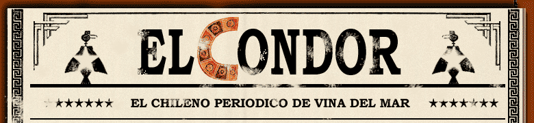
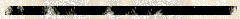
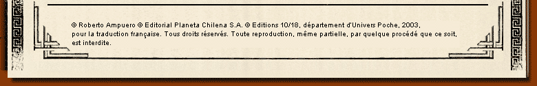

"Le visiteur referma doucement la porte du petit bureau. - Cayetano Brulé ? demanda-t-il. La pièce sentait le café et la cigarette. Cayetano pivota sur son siège : devant lui se tenait un homme maigre, aux yeux bleu délavé, aux cheveux blancs. Il portait un costume foncé, en lin, à la veste croisée, et une cravate de soie rouge, fixée par une épingle en or. - Moi-même, répondit le détective sans quitter son bureau, le paquet de café espresso encore à la main, la petite cafetière italienne, démontée, dans son dos. Par la fenêtre, la lumière de l'après-midi tombait maintenant sur la nuque et les épaules de Brulé. Il posa le paquet près de l'Olivetti, se mit debout, essaya de se sécher les mains avec la serviette humide qu'il utilisait pour les tasses et tendit le bras par-dessus le bureau. - Enchanté. À qui ai-je l'honneur ? - Kustermann, Carlos Kustermann, répondit le visiteur en serrant la main du détective. Il sourit, révélant quelques couronnes. Brulé calcula que la vente de ces dents, du costume et de la montre lui rapporterait de quoi se la couler douce pendant deux ans. - Asseyez-vous... " |
| Cayetano Brulé, un nouveau Grand Détective 10/18 au sang chaud. Le détective privé Cayetano Brulé a un passeport américain mais est né à La Havane en 1945. Ses parents ont émigré en Floride en 1956, trois ans avant l'arrivée de Castro au pouvoir. C'est à Miami qu'il a fait ses études et qu'il a travaillé avant de rencontrer une Chilienne marxiste qu'il préfère aujourd'hui oublier. Elle l'avait convaincu de s'installer à Valparaiso, au Chili, en 1975, avant de l'abandonner pour la France et un musicien d'un groupe folklorique. Dans la grande tradition des détectives de roman noir, Cayetano Brulé est un cynique jamais dupe, un séducteur désabusé qui balade son vague à l'âme dans les affaires politico-mafieuses les plus louches de la planète. |

| Cuba et l'Amérique
latine, un décor tropical pour des polars très
politiques Du port mythique de Valparaiso aux faubourgs rythmés de La Havane, en passant par les plages insomniaques de Miami Beach, Cayetano Brulé emmène le lecteur dans les coulisses d'un univers qu'il ne connaissait que sous un angle documentaire? L'Amérique latine est un continent fascinant, mais à la vie politique mouvementée. Derrière les beautés des tropiques ou la musique des boléros, il ne faut pas se faire d'illusions. Ainsi à Cuba, sous la dictature castriste, le désenchantement est général, les apparences trompeuses et la vérité ne triomphe que brièvement? |
| Querelle d'amoureux qui a mal tourné ? Règlement de compte entre contrebandiers ? Vengeance de trafiquants de drogue contre ceux qui trahissent le cartel ? L'enquête officielle n'a rien donné et, découragé, Carlos Kustermann, un riche homme d'affaires, demande à Cayetano Brulé d'enquêter sur la mort de son fils, Cristian, assassiné dans une pizzeria il y a quelques mois, à Vina del Mar, une station balnéaire chilienne. L'enquête du détective privé le mènera d'abord à Bonn, en Allemagne, où Cristian Kustermann travaillait comme journaliste, puis à La Havane, où il apprend que le fils de l'homme d'affaires appartenait à un réseau de guérilleros? |

